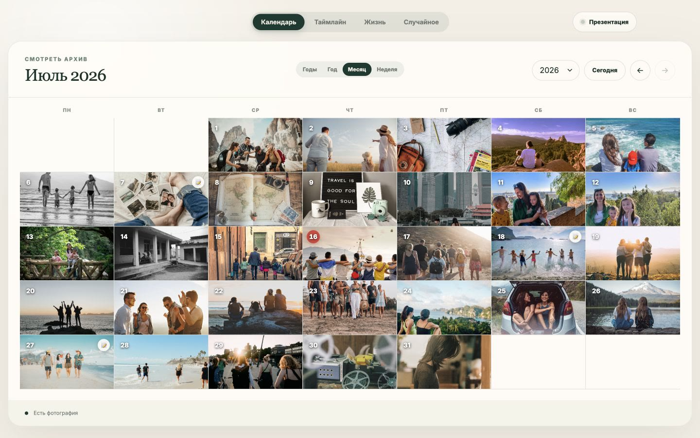
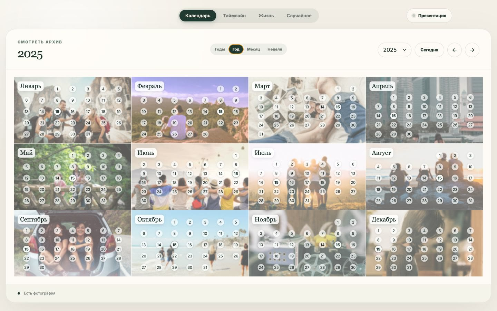
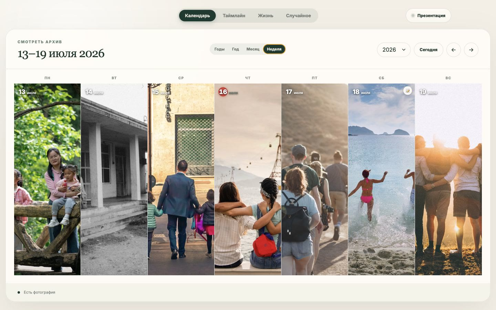
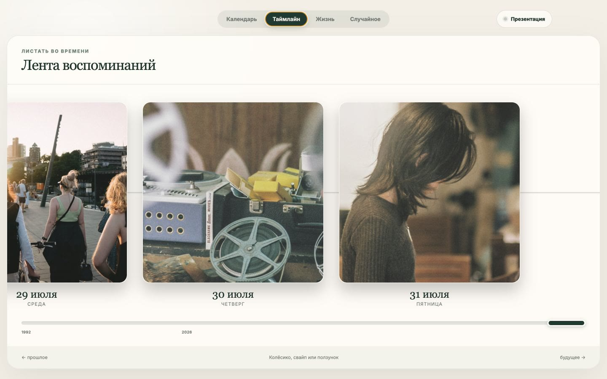
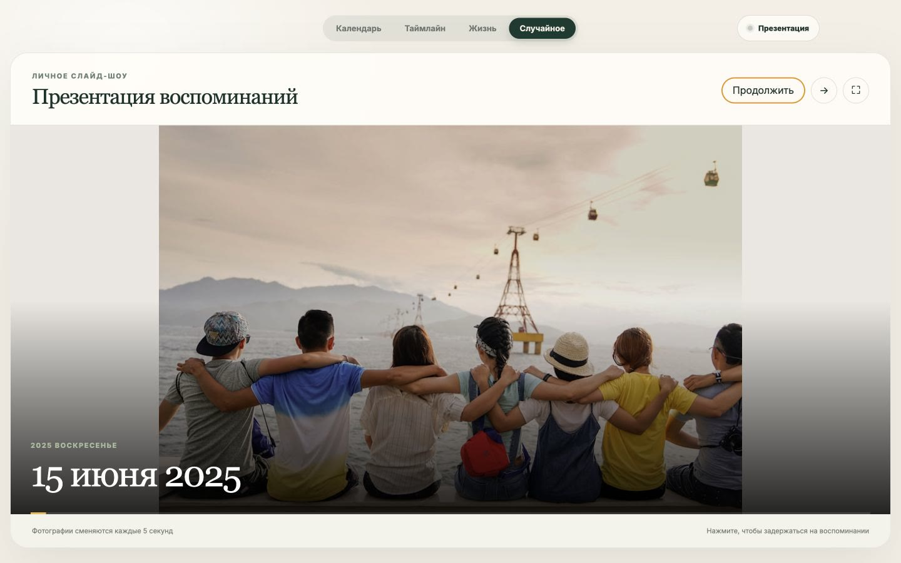

Ваши файлы остаются вашими
Архив читается прямо с диска и не загружается в интернет.
Личный архив без облака
«Фото дня» берёт снимки и записи из выбранной папки и превращает их в календарь воспоминаний. Всё хранится на вашем компьютере.
Полностью бесплатно · без подписки и скрытых платежей
Доступно только на компьютере Установите «Фото дня» на macOS или Windows.

01 — О приложении
Вы сами выбираете папку, а приложение раскладывает фотографии и дневниковые записи по датам. Никакой регистрации, импорта в чужой сервис или подписки.
Архив читается прямо с диска и не загружается в интернет.
Выберите папку один раз — приложение запомнит её само.
Проект доступен на GitHub: можно изучать, менять и дополнять.
02 — Шесть взглядов
Месяц
Все дни месяца складываются в цельную историю. Фотографии и дневниковые записи всегда на виду.
Год

Неделя

Таймлайн

Жизнь


Случайное · слайд-шоу
«Случайное» — это личный режим презентации: снимки мягко сменяют друг друга каждые пять секунд. Включите полный экран и позвольте архиву самому выбрать, куда вас вернуть.
Демонстрационные фотографии — Unsplash
03 — Начать
Установите приложение, выберите папку с архивом — и возвращайтесь к своим моментам в любое время.